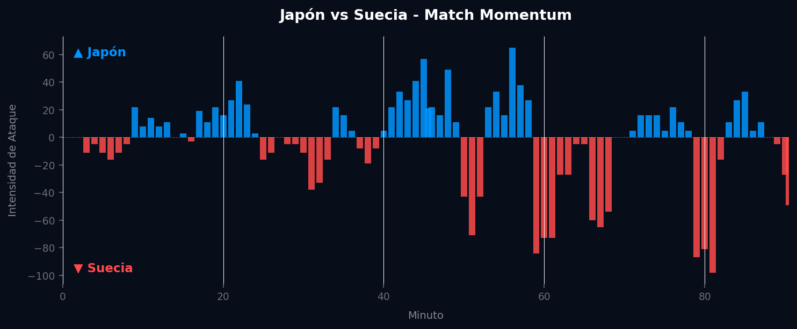
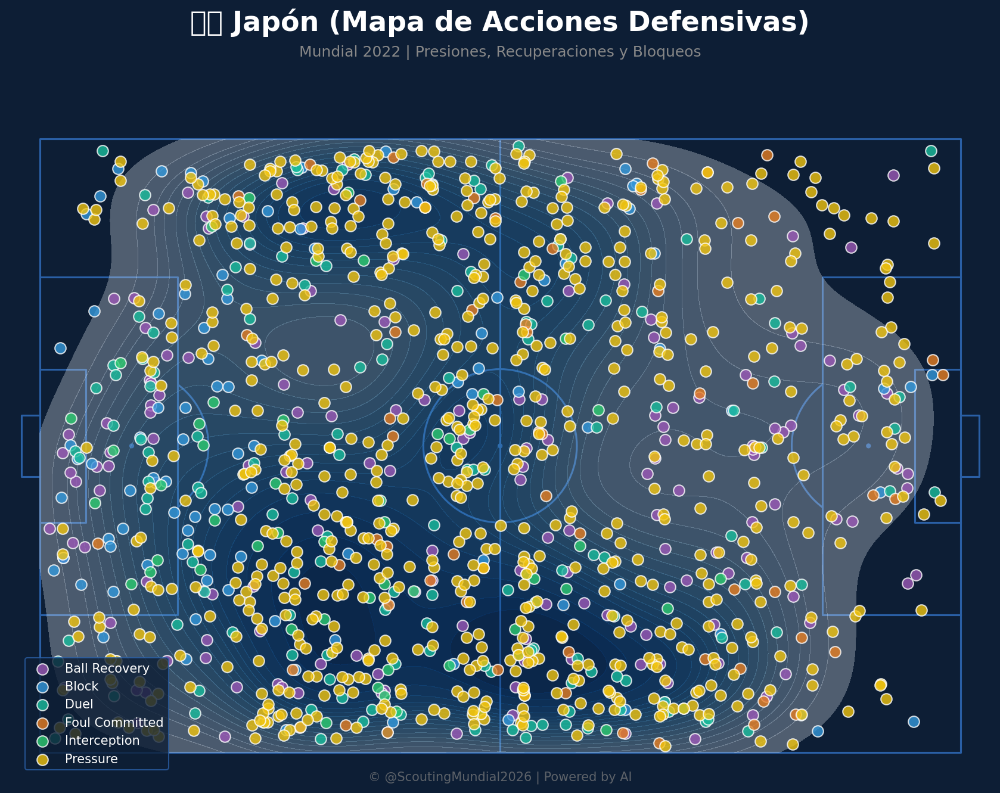
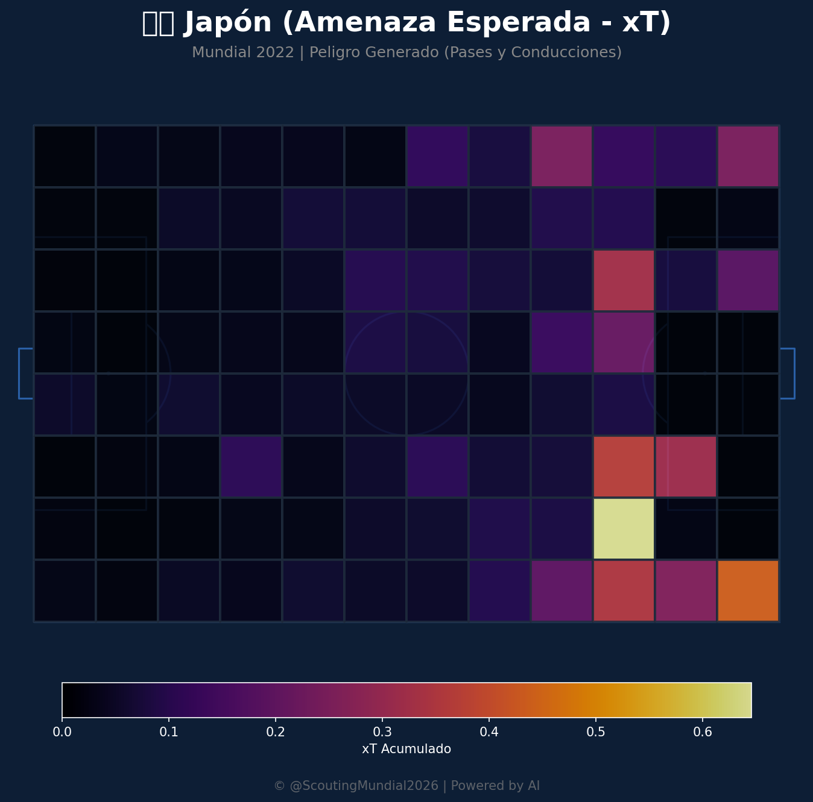
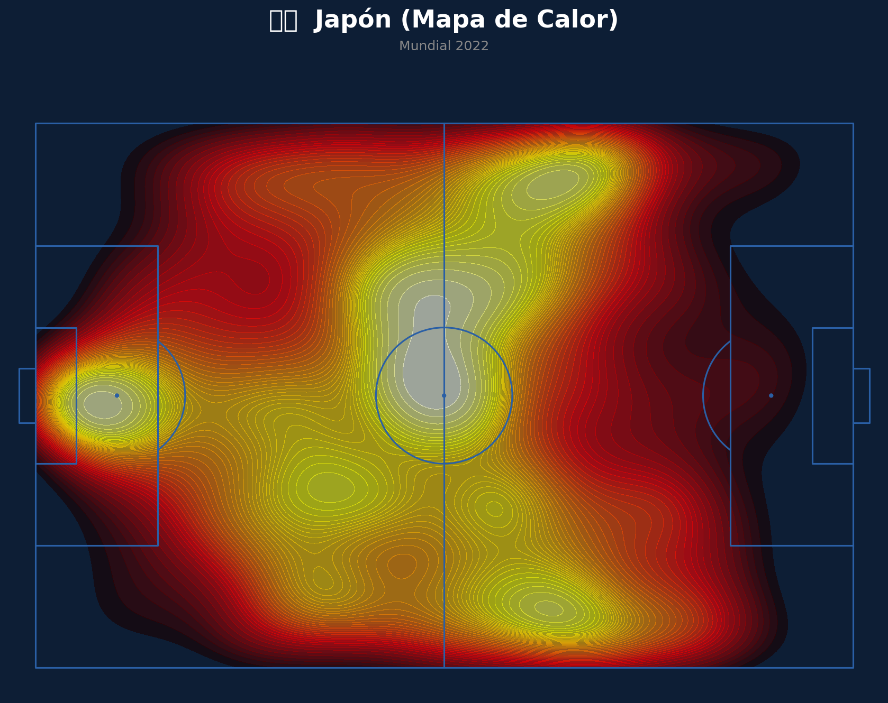
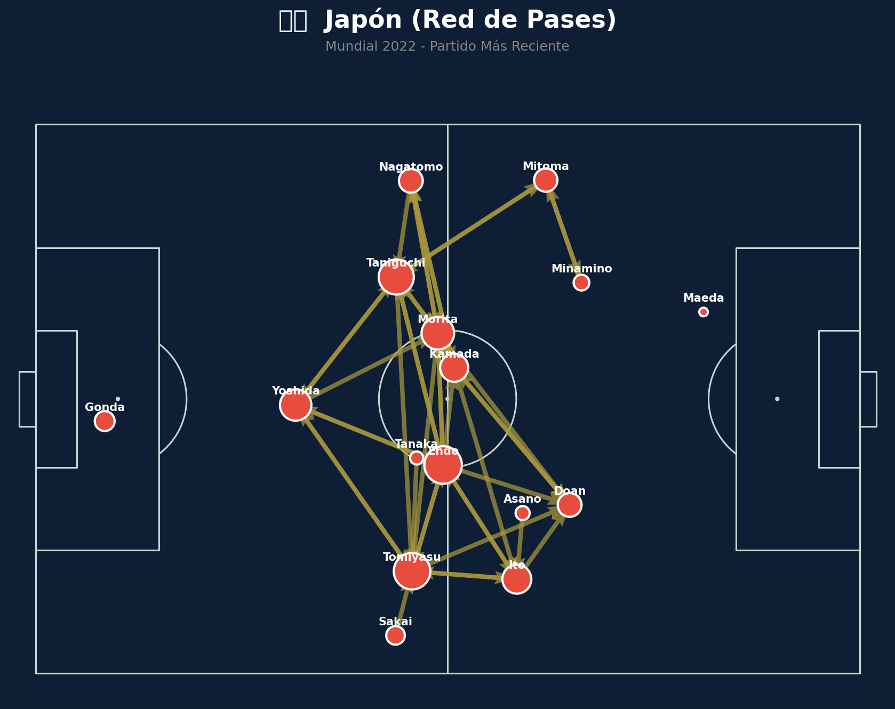
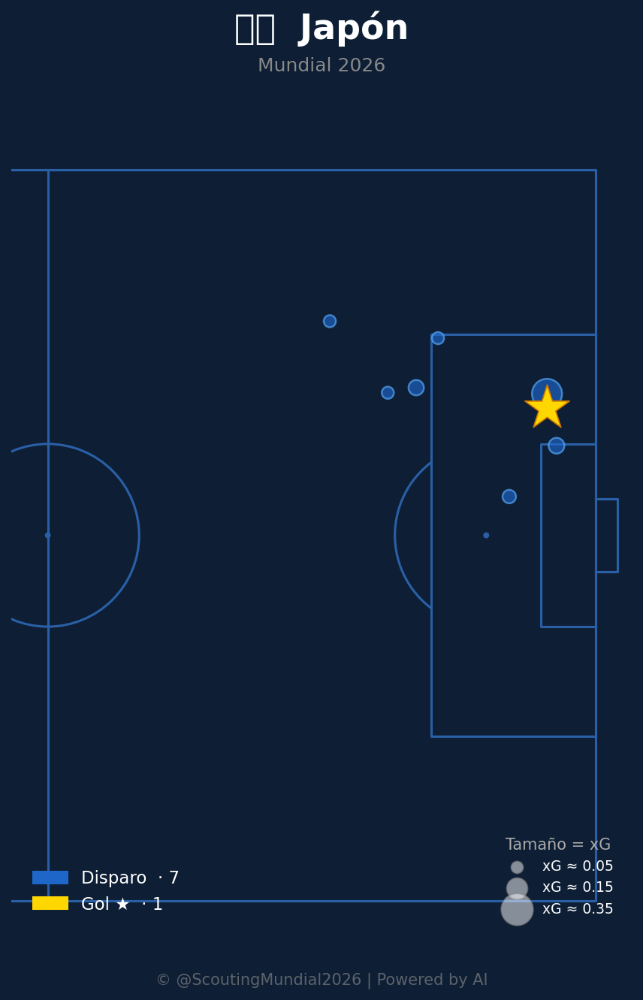
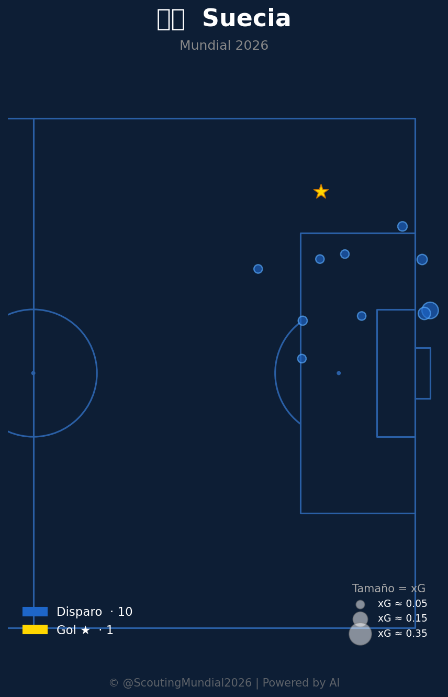

Grupo F
 Suecia
Suecia
Japón vs Suecia
📅 2026-06-25 · 🕒 17:00 (Local)
Japón

1 - 1
FINALIZADO
Suecia
📅 2026-06-25 · 🕒 17:00 (Local)
Suecia
El esperado duelo entre Japón y Suecia, correspondiente a la última jornada del Grupo F del Mundial 2026, culminó en un empate 1-1 que mantuvo en vilo a los aficionados hasta el pitido final. El encuentro se caracterizó por un tenso equilibrio táctico, con Japón buscando imponer su ritmo y control de balón desde el inicio, mientras que Suecia optó por una estructura más sólida y la búsqueda de transiciones rápidas. La primera mitad fue un ajedrez táctico sin grandes ocasiones claras, con ambos equipos midiendo fuerzas y priorizando no cometer errores. Sin embargo, en la segunda parte el partido se abrió. Japón rompió el celofán en el minuto 57 con un gol de Ritsu Doan, que culminó una excelente jugada colectiva por la banda derecha y desató la euforia nipona. Los "Samuráis Azules" intentaron gestionar la ventaja, pero Suecia, impulsada por su físico y la necesidad de puntos, arremetió con fuerza en los últimos compases. El empate sueco llegó en el minuto 82, obra del delantero Viktor Gyökeres, quien aprovechó un cabezazo certero tras un saque de esquina, dejando el marcador igualado y el destino de ambos equipos en el grupo aún por definir.
El análisis del Match Momentum revela una dinámica fascinante y un reflejo claro de los diferentes enfoques tácticos. Japón dominó en intensidad de ataque el 51.1% del partido, lo que evidencia su intención de controlar el tempo y la posesión, tejiendo jugadas con paciencia y buscando grietas en la defensa sueca. Su intensidad máxima, alcanzada en el minuto 56' con un valor de 65.00, coincide casi a la perfección con el momento de su gol en el minuto 57', demostrando la efectividad de su presión sostenida y su capacidad para capitalizar sus momentos de mayor ímpetu. Esta fase del partido fue el culmen de su plan de juego, donde lograron romper el cerrojo nórdico.
Sin embargo, Suecia, a pesar de dominar en intensidad el 41.3% del partido, exhibió una explosividad mucho mayor en sus picos. Su intensidad máxima fue de un contundente 98.00 en el minuto 81', un valor extraordinariamente alto que se tradujo directamente en el gol del empate en el minuto 82'. Este dato es elocuente: Suecia, que había absorbido gran parte del control japonés, supo guardar sus energías para un asalto final devastador. El Match Point del encuentro fue sin lugar a dudas el minuto 81', momento en que Suecia desató una avalancha ofensiva sin precedentes en el partido. La decisión de sus técnicos de introducir variantes ofensivas y la determinación de sus jugadores para ir por el empate generaron una presión insostenible que culminó en el cabezazo de Gyökeres. Este punto crítico no solo selló el resultado final, sino que redefinió el panorama del grupo, cambiando la victoria nipona por un reparto de puntos vital para ambos.

El equipo japonés mostró un planteamiento táctico fiel a su identidad, buscando la posesión y la progresión organizada a través de un mediocampo dinámico y técnicamente dotado. Implementaron una presión post-pérdida efectiva que les permitió recuperar balones en zonas adelantadas y mantener a Suecia bajo un constante escrutinio. Sus aciertos residieron en la fluidez de sus combinaciones en tres cuartos de cancha, especialmente por las bandas, donde sus extremos generaron superioridades numéricas y desequilibrio. A pesar de lograr el gol y dominar la posesión, sufrieron en los últimos 15 minutos para contener la embestida física de Suecia, mostrando cierta vulnerabilidad defensiva en el juego aéreo y en la gestión de los saques de esquina en momentos de máxima presión.
Suecia apostó por un bloque defensivo bien estructurado, generalmente un 4-4-2 o 4-5-1 en fase defensiva, buscando cerrar los espacios interiores y forzar a Japón a jugar por las bandas. Su principal virtud fue la solidez defensiva y la disciplina táctica para mantener la forma a lo largo del partido. Ante el control japonés, respondieron con un juego directo y transiciones rápidas que buscaban explotar la velocidad de sus delanteros y la potencia física de su mediocampo. Las fallas defensivas fueron pocas en juego abierto, pero la pasividad en el marcaje dentro del área tras el gol japonés les costó caro. Sin embargo, su capacidad para elevar la intensidad en el tramo final, especialmente mediante el recurso del balón parado y la incursión de delanteros frescos, fue crucial para conseguir el empate, evidenciando una planificación para explotar la fatiga rival.
El duelo táctico entre los entrenadores fue un choque de estilos bien definidos. Japón buscó someter a Suecia a través de la posesión y la técnica, logrando su objetivo por largos pasajes del encuentro y reflejado en el dominio porcentual del momentum. La propuesta de Suecia, por otro lado, fue más reactiva, enfocada en la contención y la explosividad en transiciones, evidenciada por su pico de intensidad arrollador en el final del partido. Ambos equipos demostraron capacidad para ejecutar sus planes, pero también para reaccionar a las circunstancias. El empate 1-1 se presenta como un veredicto justo. Japón capitalizó su período de control, mientras que Suecia demostró una resiliencia formidable y una pegada letal en su momento de máxima efervescencia. Nadie mereció perder, y el reparto de puntos parece ser la conclusión más equitativa para un partido de alta tensión y estrategias contrastantes.









